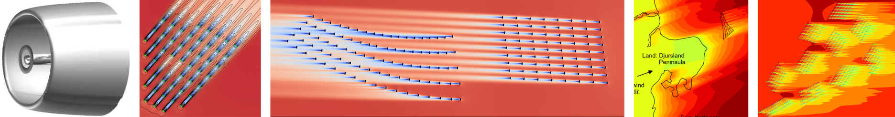

PyWakeEllipSys
2009 [2] |
2014 [5] |
2015 [4] |
2017 [7] |
2023 [6] |
||||
|  | ||||||||
PyWakeEllipSys is a Python interface of the closed-sourced CFD flow solver EllipSys. PyWakeEllipSys uses the same API as PyWake and can simulate wind farm AEP with Reynolds-averaged Navier-Stokes using a simple Python script, provided that EllipSys is installed on a HPC.